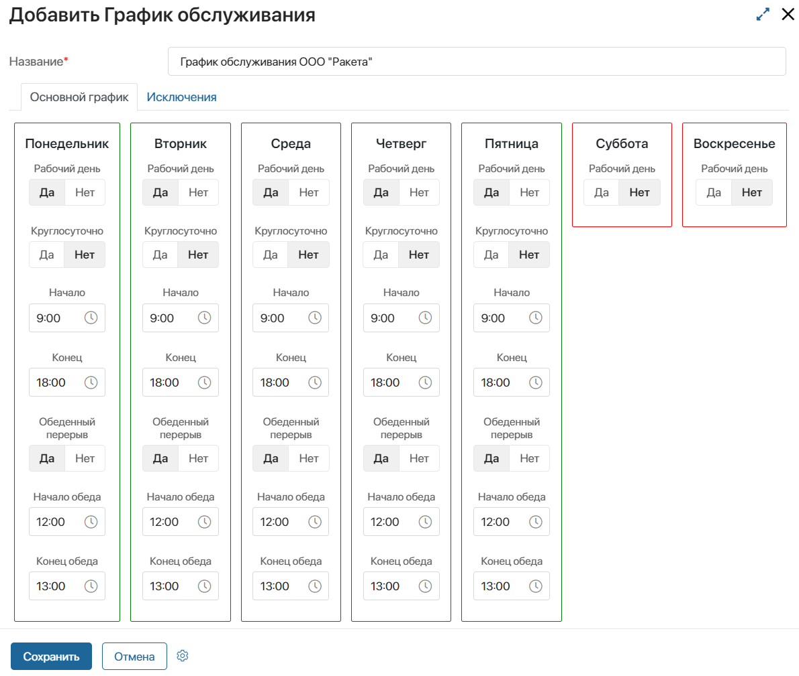
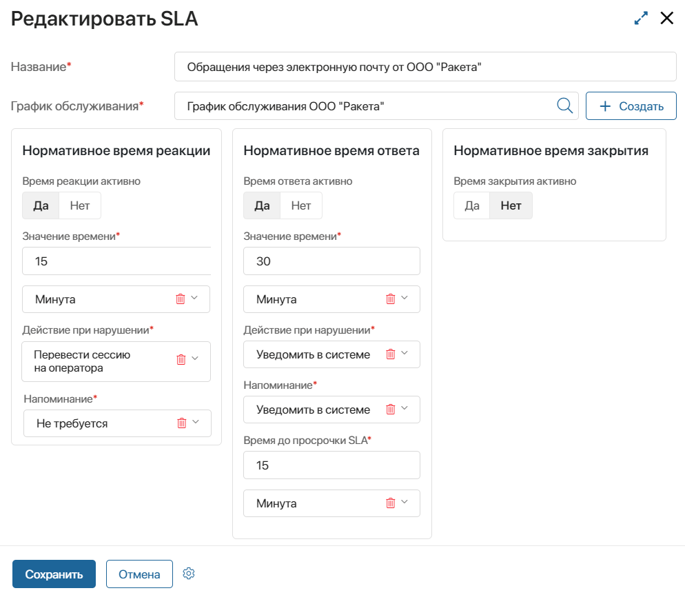

Нормативы SLA отображают договорённости с клиентом об уровне обслуживания. В системе можно установить нормативные сроки для обработки обращений в линиях, а также настроить напоминания и уведомления о нарушениях. Это помогает своевременно выполнять обязательства перед клиентами и обеспечить высокое качество услуг.
начало внимание
Использование SLA в линиях доступно при подключении решения ELMA365 Service.
конец внимание
Чтобы настроить контроль SLA в линиях, выполните следующие шаги:
- Установите график обслуживания клиента. SLA будет применяться только в рабочее время операторов согласно графику.
- Задайте нормативы SLA. Укажите сроки, в которые операторы должны отвечать на сообщения и решать запросы клиента.
- Настройте применение SLA при маршрутизации сессий. При назначении сессии к ней применяется SLA, указанный в настройках использованного правила маршрутизации.
В этой статье описано, как настроить применение SLA для обращений при их маршрутизации. Обратите внимание, SLA также можно настроить в рамках бизнес‑решений Клиентский сервис и ServiceDesk 2.0.
Установить график обслуживания
начало внимание
Создавать графики обслуживания могут только пользователи, включённые в группу Администраторы.
конец внимание
Графики обслуживания позволяют задать дни и часы, когда операторы отвечают на обращения клиентов. Нормативы SLA учитываются только в рабочее время.
Вы можете установить разные графики обслуживания для разных клиентов или типов услуг. Чтобы создать график:
- Перейдите в раздел Системные справочники и откройте приложение График обслуживания.
- Введите название графика.
- На вкладке Основной график настройте стандартные рабочие дни. Укажите, в какие дни операторы отвечают на запросы, является ли обслуживание круглосуточным и есть ли у сотрудников обеденный перерыв. Задайте продолжительность рабочего дня и обеда.

- На вкладке Исключения нажмите кнопку + Исключение, чтобы указать праздничные и укороченные дни, а также дополнительные рабочие дни. Для рабочих дней можно задать время обслуживания и обеденный перерыв.
- Сохраните график.
Задать нормативы SLA
начало внимание
Настраивать нормативы SLA могут только пользователи, включённые в группу Администраторы.
конец внимание
Установите сроки обработки обращений согласно вашим договорённостям с клиентом. Для этого:
- Перейдите в раздел Линии и откройте приложение SLA.
- Введите название SLA.
- Выберите график обслуживания. Он определяет, в какие дни и часы учитывается SLA.
- Задайте нормативы SLA в следующих блоках:
- Нормативное время реакции — время, в течение которого оператор должен отреагировать на новое обращение клиента, например, подтвердить, что запрос принят на рассмотрение;
- Нормативное время ответа — время ответа на каждое последующее сообщение клиента в сессии;
- Нормативное время закрытия — срок закрытия сессии.
- Время реакции активно, Время ответа активно, Время закрытия активно — установите Да, чтобы норматив SLA учитывался;
- Значение времени* — установите нормативный срок обработки обращения. Для этого задайте значение и выберите единицу времени — секунды, минуты, часы, дни, недели или месяцы.
Для каждого блока определите действие и напоминание при нарушении SLA:

- Действие при нарушении* — выберите, что произойдёт, если оператор не обработает обращение в установленный срок. Получатель уведомления, оператор или группа операторов будут заданы в настройках маршрутизации обращений. Варианты действий:
- Не требуется — никакие действия не выполнятся;
- Уведомить в системе — отправить оповещение в #ленту о нарушении норматива SLA;
- Уведомить на электронную почту — отправить письмо о нарушении норматива SLA;
- Перевести сессию на оператора — назначить сессию на определённого оператора;
- Перевести сессию на группу операторов — перевести сессию в очередь операторов выбранной группы;
- Перевести сессию на наименее загруженного оператора группы — назначить сессию на оператора, который в данный момент имеет наименьшее количество активных сессий в выбранной группе и находится в статусе Онлайн.
- Напоминание* — укажите, нужно ли заранее предупреждать о скором истечении установленного срока. Получатель будет задан в настройках маршрутизации обращений. Выберите вариант:
- Не требуется — не напоминать;
- Уведомить в системе — отправить оповещение в #ленту с напоминанием о скором нарушении SLA;
- Уведомить на электронную почту — отправить оповещение на электронную почту о скором нарушении SLA.
- Время до просрочки SLA* — укажите, за сколько секунд, минут, часов, и т. д. напомнить о скором нарушении SLA.
- Нажмите Сохранить.
Настроить применение SLA при маршрутизации сессий
начало внимание
Настраивать правила маршрутизации обращений могут только пользователи, включённые в группу Администраторы.
конец внимание
При распределении обращений они назначаются на определённые группы операторов в зависимости от типа. Для каждого типа обращения учитываются соответствующие нормативы SLA. Например, критичные обращения сразу попадают к старшим специалистам, и для них установлены более сжатые сроки обработки.
Распределение обращений в системе происходит согласно правилам маршрутизации. Нормативы SLA указываются в настройках этих правил. О том, как настроить пользовательские правила распределения сессий, мы подробно написали в статье «Настроить маршрутизацию обращений».
Чтобы задать контроль SLA для сессий в линии:
- Включите фича-флаг
enableLinesSLA. Подробнее читайте в статьях «Изменение параметров On‑Premises Enterprise» и «Изменение параметров On‑Premises Standard». Если вы используете поставку SaaS, для включения фича‑флага обратитесь к вашему менеджеру ELMA365. - Перейдите в раздел Администрирование > Линии, откройте настройки нужной линии и на вкладке Маршрутизация перейдите к редактированию пользовательского правила.
- В поле SLA выберите SLA, который будет применяться к сессии при активации правила. В окне отобразятся блоки с настройками нормативов.

- В соответствии с выбранным действием или напоминанием при нарушении SLA укажите:
- получателя оповещения. Вы можете выбрать пользователя, группу или элемент оргструктуры;
- оператора или группу, которым будет назначена сессия. При выборе группы операторов доступны только те, которые указаны в настройках блока Группы.
- Сохраните настройки правила.
- На странице настройки линии нажмите Сохранить.
Теперь для всех сессий, которые назначаются на операторов по данному правилу, учитывается указанный SLA. Чтобы при обработке обращения оператор видел таймеры по нормативам, вынесите на боковую панель приложения Сессии виджет Нормативы SLA для Сессии. Подробнее читайте в статье «Настроить сессию».
Обратите внимание:
- настройки SLA применяются к сессии при распределении и не изменяются до её закрытия. Это значит, что при редактировании настроек SLA изменения не вступают в силу для уже созданных сессий;
- при переназначении сессии на другого оператора таймеры по нормативам не перезапускаются;
- если при применении SLA не удаётся получить график обслуживания, например, когда он удалён, нормативы для сессии не будут учитываться;
- если возникнет ошибка при выполнении действий по нарушению SLA, администратор системы получит системное уведомление об этом.